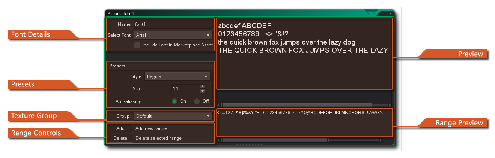

 Cuando desee dibujar texto en su juego, este texto se dibujará en una fuente estándar Arial 12 puntos, pero para hacer textos más interesantes o únicos, probablemente quiera usar diferentes tipos de letra. Entonces, para usar diferentes tipos de letra que tenga en su computadora, debe crear un recurso de fuente en GameMaker Studio 2. Esto se hace haciendo clic derecho  en la carpeta "Fuentes" en el árbol de recursos y haciendo clic en "Crear". Para cada recurso de fuente que cree, especifique un tipo particular de fuente de su computadora que luego se puede usar en su juego usando la acción o el código para establecer una fuente para el dibujo.
en la carpeta "Fuentes" en el árbol de recursos y haciendo clic en "Crear". Para cada recurso de fuente que cree, especifique un tipo particular de fuente de su computadora que luego se puede usar en su juego usando la acción o el código para establecer una fuente para el dibujo.
Cuando crea un recurso de fuente por primera vez, se abre la ventana del editor de fuentes con las siguientes opciones:
Aquí puede darle a su fuente un nombre único (caracteres alfanuméricos y el símbolo "_" debajo de la barra solamente), así como elegir la fuente que usará. La fuente debe estar instalada en su máquina y, debido a problemas de licencia, GameMaker Studio 2 no almacena los archivos de fuente reales con el archivo de proyecto de forma predeterminada, sino que la fuente se representa en una página de textura como glifos pre-renderizados. Si desea distribuir el archivo de fuente real ( *.ttf solo) junto con el proyecto al crear un activo del Mercado, entonces puede marcar la opción Incluir fuente en el activo del mercado. Esto abrirá el explorador de archivos donde podrá seleccionar el archivo de fuente y luego se agregará a los archivos incluidos con el proyecto.
NOTA IMPORTANTE: solo debe usar las fuentes que tiene permiso legal y licencia para redistribuir o usar en su proyecto.
En esta sección, puede establecer el tamaño (en puntos: el valor predeterminado es 12pt) y si la fuente debe dibujarse en negrita o cursiva o debe aplicarse un suavizado de bordes (anti-aliasing). La ventana de vista previa a la derecha le mostrará el texto de vista previa como se verá con el tamaño y las transformaciones que ha especificado.
Como se mencionó anteriormente (en la sección Detalles de fuente ) de forma predeterminada, todos los glifos de fuente se procesarán en una página de textura como parte de un grupo de texturas para convertirlos en recursos gráficos. Esta sección del Editor de fuente le permite seleccionar el grupo que desea añadir a, y cuando el juego se compila la fuente se añadirá a una textura temporal para crear una sola imagen con todos los glifos necesarios y entonces esto será agregado al grupo de textura principal para exportar. Tenga en cuenta que si ha elegido incluir el archivo de fuente como parte de la compilación del juego, esta opción no hará nada. Para obtener más información sobre Grupos de texturas, consulte aquí.
Al crear un recurso de fuente, es raro que desee incluir cada glifo para la fuente. Esta es la razón por la que GameMaker Studio 2 utiliza de manera predeterminada los caracteres del 32 al 127 de la fuente elegida, ya que esto nos da los números y las letras mayúsculas y minúsculas junto con ciertos signos de puntuación. Sin embargo, puede cambiar el rango de caracteres utilizado para ayudar a optimizar sus juegos, es decir: si solo necesita los números de una fuente específica, solo seleccione los números. Para hacer esto, primero debe hacer clic en el botón Eliminar para borrar el rango actual (puede que necesite seleccionar el rango para que esto funcione al hacer clic
en la ventana de vista previa) y luego haga clic en el botón Agregar para agregar un nuevo rango. Esto abrirá la siguiente ventana encadenada:
Esta ventana tiene algunos botones para ayudarlo a establecer un rango estándar para su fuente:
- El rango normal de 32 a 127
- El rango ASCII de 0 a 255
- El rango de dígitos que solo contiene los 10 dígitos
- El rango de letras que contiene solo letras mayúsculas y minúsculasSe pueden usar otros rangos escribiendo en el primer y último índice de caracteres del rango que desea establecer en los cuadros de entrada del rango de caracteres (si un personaje no se encuentra en el rango, es reemplazado por un espacio). Además de estos botones y cuadros de entrada, también tiene dos opciones adicionales que son especialmente útiles:
- Desde código: si haces clic en este botón y luego haces clic en Aceptar, GameMaker Studio 2 analizará automáticamente tu código de juego para cadenas y luego creará diferentes rangos de caracteres para cubrir todo el texto de tu juego. Tenga en cuenta que busca todas las cadenas (ya sea dentro de "" o "") y también puede incluir nombres de archivo en los rangos de caracteres.
- Desde archivo: esto funciona de manera similar a la opción "de código" explicada anteriormente. Si hace clic en él, se le pedirá que proporcione un archivo, y una vez hecho esto, debe hacer clic en Aceptar. GameMaker Studio 2 luego analizará el archivo y creará rangos de caracteres para el texto que se encuentre dentro de él.
Tenga en cuenta que puede editar manualmente el rango de texto agregando o eliminando glifos de texto en la ventana de vista previa directamente.
La ventana de vista previa es donde puede escribir cualquier texto que quiera probar. Se representará utilizando los ajustes preestablecidos que ha seleccionado.
Aquí se enumerarán los diferentes rangos que ha agregado. Los valores de rango se muestran a la izquierda y los glifos de rango se muestran a la derecha.